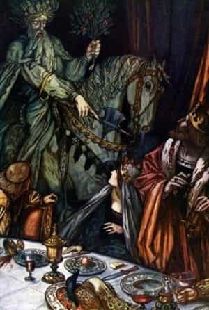
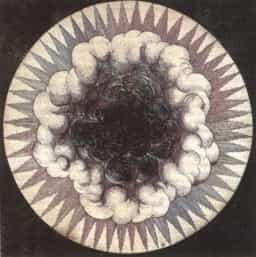

< < < Back
How One Of King Arthur’s Tales Shows A Vital Masculine Lesson – Return Of Kings
Greetings to the men of ROK, with best wishes for the New Year! I hope Christmastide has gone well for you all. This season also brings us through the New Year, a “liminal” time. The concepts of “liminal time” and “liminal space” are important in many religions; “liminal” is from the Latin “limen,” meaning a boundary or border, especially the threshold of an house.
Such things as rivers, caves, temple perimeters, the times of dawn and dusk, the transition from old to new year, are “liminal” places or periods of transition and ambiguity. The month of January itself is named for the Roman god, Janus, looking backwards and forwards, who was the god of doors, gates and other liminal spaces.
The Christian feasts as well, reflect on the liminal character of Christ—God-Man, Eternal and Newborn, Infinite and Finite, Himself the fulfillment of the Old, and Author of the New Covenants, etc. One of my favourite stories, drawing on Christianity and Christianized elements of old pagan lore to exposit these themes, is the tale of Sir Gawain and the Green Knight. I re-read it every year around New Year’s Day.
As a man who has read the greats from Homer to Shakespeare and beyond, I do not speak lightly in calling Sir Gawain and the Green Knight one of the very finest works of Western Literature. But it is so often overlooked, that I don’t know if I should second-guess my opinion, or assume that most men are too far removed from Medieval culture to understand all the tale’s riches. In any case, upon the whole story, more than any other I have found, the piercing glory of the Christmas spirit rests.
I thought seriously about dedicating an article or four entirely to this tale, which is so fitting for this time of year, and is one of the greatest stories of virility ever written. But I will do this next year, I think. For now, I’ll give a brief synopsis; those who want the great pleasure of reading the tale should skip what follows (major spoiler alert), and can come back to read the last couple paragraphs of the article. I recommend Tolkien’s translation.
The Story
On New Year’s Eve a young King Arthur is at court with his merry knights and their ladies, in the middle of Christmastide feasting. Everyone has been served, but Arthur has the custom of not eating his first meal of the year until he has heard a tale of some marvel or feat.
Suddenly a gigantic man, green from head to toe, with green eyes and beard, on a green horse, rides into the hall and challenges the “beardless young lads” (a knock at the fresh youth of Arthur and his knights) to a game: he will let one man of the hall take a swing at his head with his great, green axe; but on New Year’s day of the coming year, that man must come to find him at the Green Chapel, and offer his neck to the axe in turn.
After a dumbfounded moment, Gawain winds up cleaving the Green Knight’s head clean off… but then the knight arises, picks up his head, and arranges to meet Sir Gawain a year and a day hence. Gawain, true to his word, sets off next year and endures a few days of trial before finally going on to meet his doom at the end of the Green Knight’s axe. He survives the encounter, but I’ll let you read how on your own.

In the end, the whole story is a tale of virtue and manliness, and how mature manhood is not the result of blunting, diminishing, suppressing or escaping our raw virility, but of shaping it into a truly keen and constructive instrument through virtue and good character. The Green Knight is a Christianization of the Green Man, a similarly “liminal,” trickster figure from English lore. The Green Man is often depicted as a human face emerging from foliage, but just as often as foliage emerging from an human skull.
The Green Man represents the vigor of merely biological life of ambiguous morality, a raw force, that could be put to good or bad purposes, which ends naturally in death, and emerges renewed from death. Gawain’s struggles with courage, with lust, with mortality and humility, are centered upon his contest with the Green Man. The man who is not afraid to die, and who does not abuse his natural faculties contrary to nature, befriends death and nature; the man who fails, loses his head.
Many men have asked me to write some articles on how to pray; strange as it may seem, directing you to this story, and to reflect upon this liminal time of year, situated in the balance between old and new, life and death, is my way of beginning this topic: for prayer and spiritual life comprise the greatest “liminal” space or time of them all. The articles I have written thus far were also all designed to hint at some basic concepts before doing so.
In Gawain’s encounter with the Green Knight, the Green Knight acts as a touchstone: he reveals the mettle of the men who enter his contest. Similarly, prayer is first and foremost a contact with the Source and Sustainer of our being. In prayer, we meet our origin, and our last end. We meet Truth so true, that the most honest men begin to see all the ways in which they lie to themselves. It is a thing worse than death in some ways, especially for the proud man who thinks strength consists in never owning his own weakness. Any real attempt at prayer will bring us to confront our weakness; as Gawain found with his green garter (read the story!), the acknowledgment of our ultimate, inevitable weakness, can itself become the perfection of strength.
Life Imitates Art
I knew a monk at the monastery who had gladly given up all he had to come there. Very quickly after arriving, within just a few months, he had thrown himself at prayer so completely that he came to a kind of threshold in the contemplative life. He told me that he had gotten to a point where his state of prayer was so constant and so focused, that there seemed to be a vast amount of time in each, small moment. He always had “enough time” to consider everything he was doing, every faintest movement of thought—and, moreover, he had a great clarity, and a certain knowledge of what was right and wrong, what he should and should not do, in each fleeting moment of time.
He said that this exposure to an hyper-aware state terrified him. It asked everything of him. It was a state of mind that did not allow him a moment to himself; never an unguarded instant; never an easy excuse for indulging in some light sin or imperfection, since every moment was a moment of full life and perfect clarity. He was no longer free to get so much as a drink of coffee when he liked. He admitted that he knew this was the first time he was truly being himself; yet he was so attached to what he thought of as “himself”—his “personality,” his “character”—that he felt like he was losing “himself” in order to become himself. He said it felt like being asked to die; in reality, he knew that this was exactly what it was.
As we enter the New Year, I am glad to go into the life of prayer. But the articles heretofore have been designed to impress a few ideas upon us: prayer and the encounter with God is a masculinizing experience because it joins us to the Supreme Patriarch. It is not easy or pleasant, but hurts and requires discipline and exercise. It is not a self-pandering, emotional process. Prayer is itself a liminal time and space—that place between the “Cloud of Forgetting” and the “Cloud of Unknowing,” between the lies or unworthy thoughts we leave behind and the Truth we do not yet know.
Brothers, I am a man who takes the spiritual life seriously, and I’ll tell you the truth: I have been living the lie for about six years, because when God made me look this thing in the maw, I could not—no, would not—pay the price. I’m not speaking lightly. Every day, I live in the shadow of my failure to yield myself to the all-consuming fire, and try to chip away at the bonds that hold me back.

But do not think it will all be so bitter at first; long before we really come to it in earnest, God often gives us consolations in prayer, makes it sweet for us, draws us to Himself, even if the pleasure must be taken away at some point to ensure our fidelity is true. So, if you want to begin the life of prayer, I ask you during this liminal time of the New Year: are you ready to encounter the Being who is nearer to you, than you are to yourself? And, are you ready to be made willing to rise to the demands this experience will make of you?
Can you be honest, true to yourselves, and to Him? For that, is the essence of prayer: radical honesty with self and God, Who will show us things about ourselves, and about Himself, that may be hard. I will not sell you an effeminate, “nice” version of prayer.
Next week we can begin discussing the “how.”
Read More: The Problem Of “Spiritual But Not Religious”